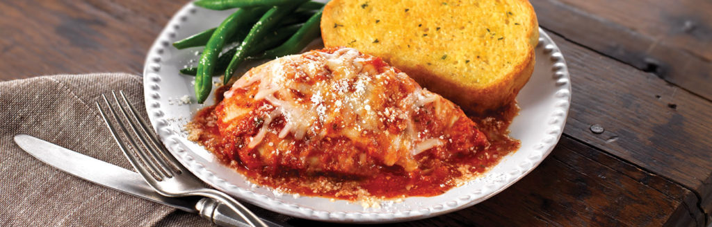

Chicken Parmesan Recipe
Home

In less than an hour, you can make this simply delicious chicken dish, baked in a flavorful tomato sauce and topped with mozzarella and Parmesan cheeses. It's a winner!
Ingredients!
- Tomato Sauce - 1 jar (24 ounces) Prego Traditional Italian Sauce
- Parmesan Cheese - 1/3 cup
- Chicken - 2 pounds skinless, boneless chicken breast halves
- Mozzarella Cheese - 4 ounces (1 cup)
- Texas Toast - 1 package (11.25 ounces) Pepperidge Farm Garlic Texas Toast, prepare with package directions
Instructions!
- Heat the oven to 375°F. Pour the sauce into a 13 x 9 x 2-inch baking dish. Stir in half the Parmesan cheese. Add the chicken and turn to coat.
- Bake for 30 minutes. Sprinkle with the mozzarella cheese and remaining Parmesan cheese.
- Bake for 5 minutes or until the chicken is cooked through. Serve the chicken and sauce with the toast.
The full recipe link is here.